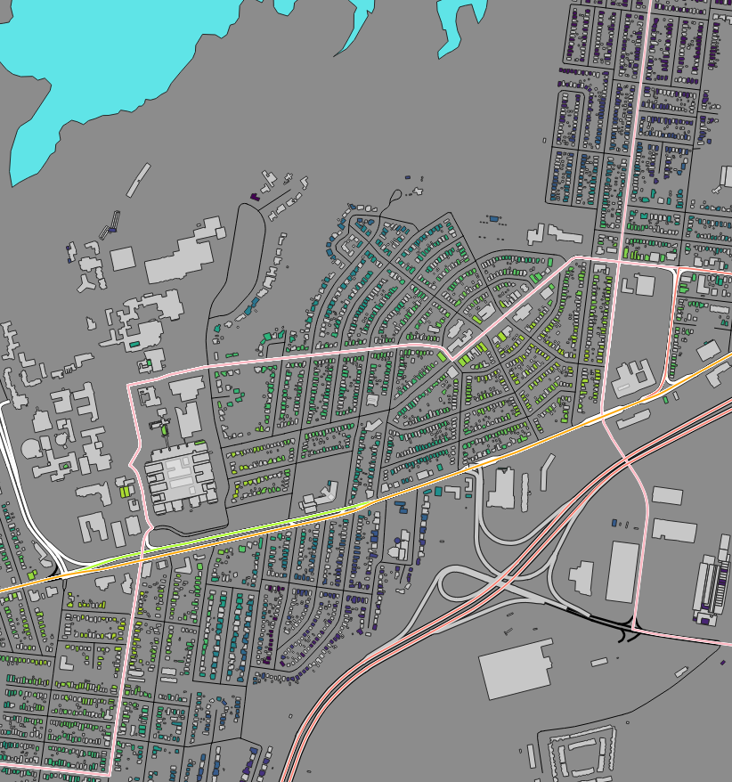
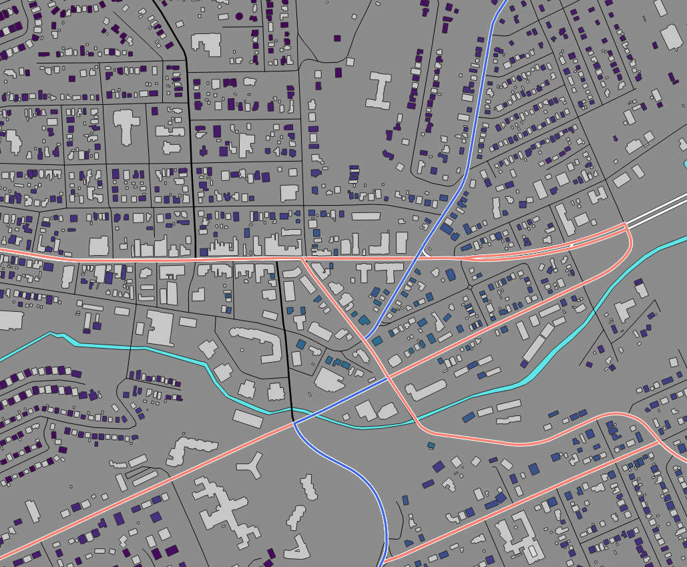
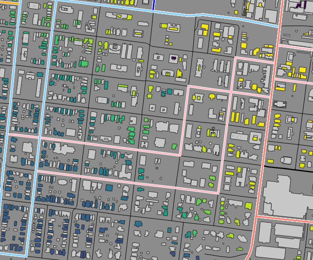
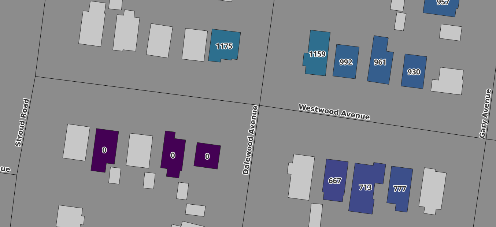

This analysis aims to provide a quantitative, high-resolution measurement which at least begins to answer that question.
This project provides two key insights: 1) how urban design (i.e. the shape of roads within a neighbourhood) affects walkability, and 2) how the distribution of routes + vehicle frequency affects the accessibility of Hamilton's public transit network. In pragmatic terms, someone considering a move to or within Hamilton could use this map to target neighbourhoods, streets, or even individual buildings which have a high degree of access to public transit.
Over 60,000 buildings are individually analyzed in this project. The colour of each building tracks the frequency that buses arrive at bus stops within walking distance—bright yellow is high frequency, dark blue/purple is low frequency. I refer to this quantity as the "transit count", and describe how it is calculated in more detail below. The techniques used give a "spatial resolution" of at least 100 metres, and often less. Following a discussion of methods used, I discuss a few insights from this work, then some avenues for future improvement.
The full webmap hosted on qgiscloud is available through this link. The Python code used for this analysis is available on my GitHub.
Some tips for interpreting, viewing, and navigating the map:
- The numerical "transit count" value for each building including in the analysis is visible at a scale of 1:2000 and below. The street names & names of the bus stops will also render at 1:2000 and below.
- Viewing the map without the "HSR_transit" layer rendered makes the distribution of the transit count quantity more apparent.
- Specific streets, neighbourhoods, and addresses can be located using the search bar at the top.
Data & Methods
The three input data sets come from Open Street Map (road network only), the City of Hamilton's building footprint data, and the GTFS repository for the Hamilton Street Railway (HSR). The HSR is a bus-only transit network. The data used here applies to the schedule on September 5, 2025.The "transit count" number is calculated as follows:
- Using the QGIS GTFS-GO plugin, the number of buses arriving at each HSR bus stop over the course of the selected 24-hour period is calculated.
- For individual, randomly selected buildings, the bus stops within a 800 metre radius are identified. For computational expediency, I only sample a portion of all the buildings in the original data set, prioritizing smaller residential buildings. I filtered out large and very small buildings, plus buildings that were > 1 km away from any bus line. Then, I "skipped over" ~every other building in the filtered set. In my opinion, my sampling provides more than adequate coverage in any region of interest.
- Using the native Network Analysis algorithm in QGIS, the shortest walking distance from each building to all nearby bus stops is calculated.
- For each of the nearby stops, a weight is assigned, according to walking distance: stops within 400 m receive a weight of 1, stops beyond 800 m receive a weight of 0, and stops between 400 m and 800 m receive a weight between 1 and 0 that decreases linearly with distance.
- The total transit count for each building is calculated as a sum of weight multiplied by the number of bus "arrivals" for all nearby bus stops. (This number is rounded to the nearest integer for display on the map.)
Results & Insights:

Westdale and Ainslie Wood from the webmap.
The Ainslie Wood and Westdale neighbourhoods—being close to McMaster University—are popular choices for students looking for places to live. These areas are serviced by multiple bus routes which primarily follow just a few specific corridors. Thus, as expected, walkable access to transit here is quite uneven, and this analysis reveals just how stark that disparity is. The homes in Northern Westdale, and southern & Eastern Ainslie Wood are towards the lowest end of the colorbar scale, while the homes near Emerson & Main and the King Street West strip are among the best connected buildings in the city.

Hamilton Mountain area from the webmap.
Transit accessibility in the Hamilton Mountain area (southern part of the map) varies widely. This is obvious from even a brief look at the HSR system map, but my analysis offers a quantitative, spatial measurement. Well connected areas are: Mohawk College, Concession St, and the vicinity of major intersections (e.g Mohawk Rd. & Upper James St). Within a given "block" bounded by major streets, homes in the interior of that block can be some of least connected buildings in the city. This is especially true in the areas closest to the Lincoln Alexander Parkway. Blocks which have a more gridded street layout have more intersections, which increases the walkability of the area when compared to street layouts featuring many cul-de-sacs, dead-ends, and long, uninterrupted streets.

A part of Dundas from the webmap.
Dundas is a historic community within the City of Hamilton. Bus routes run down the length of the main shopping strip, but only a collection of high-rise buildings just off the strip appear to be well-connected to transit, relative to the rest of the Hamilton area.

The Durand neighbourhood from the webmap.
The Durand neighbourhood contains a number of 20+ storey high-rise apartment buildings. The buildings along Caroline street are relatively much less connected to transit than the MacNab St. S and James St. S buildings (some of which are within walking distance of the Hunter St. GO centre transit hub).
- A typical transit system map (including HSR's own) communicates the paths of the routes, but not their frequency. The map from this analysis immediately shows that Route 2 on Barton St. E is more frequent than Route 3 on Cannon/Wilson St. E, for example.
- Newly built condo buildings in the downtown block bounded by King St. E, James St. N, Wilson St and Catherine St. N are very well connected to buses.
- I have explored nine sets of choices for the main three numerical parameters in this analysis: the search radius, the walking distance where the weighting function begins to decrease, and the walking distance where the weighting function reaches zero. The choices for the presented map (800 m, 400 m, 800 m, respectively) best demonstrate local variations in the transit count parameter, in my opinion. For reference, a distance of 800 m is approximately a 10-minute walk. Of course, the conclusions above depend on choices of these parameters, which reflect individual preferences in what constitutes a comfortable walking distance.
Future improvements:
- Currently, bus arrivals at adjacent stops on the same route are equally counted in this calculation. For instance, if three bus stops on Route 4 are within 400 m of one house, a single #4 bus arriving at all three stops adds a total of 3 to that building's transit count. For my objective with this map—to track the number of bus arrivals within walking distance—this sample scenario would idea only add 1 to transit count. An additional step in the calculation is required, to identify unique bus arrivals rather than just total arrivals. This would require working with the GTFS data directly, rather than relying on QGIS's GTFS-GO plugin. At face-value, some of these transit count values are shockingly high: easily in excess of 7,000 in the downtown core, near Gore park. This is (likely) primarily due to the fact that pedestrians here have 5 to 10 chances to catch any individual bus. Addressing this question of uniqueness would increase the impact of this analysis. Imagine if one could say, with confidence, that over 1,000 buses from 8 different routes come within walking distance of a given downtown condo every single day.
- I have not recorded which routes these walking-distance buses belong to. This map provides an answer of how many buses are nearby, but not which ones. At the moment, identifying nearby bus routes—and where one can go via these routes—is beyond my intended scope of this analysis. I am primarily curious about the general distribution of bus access in the city, quantitatively. A user who wishes to know where transit can take them from any given building will have to consult other sources like the HSR's network map and timetables, or their favourite A-to-B transit app.

An erroneous transit count value from the analysis.
For unknown reasons, there are examples of erroneous calculations for (thankfully) a small number of buildings. For example, 3 buildings along Westwood Avenue between Dalewood & Stroud report a transit count of zero while—impossibly—their neighbours across the street have values above 1,000. At a glance, the occurrence rate seems small (perhaps less than 1 in 1,000), and since I am not interested in aggregate statistics like average or variance, for now, I am not concerned. Should the need arise, a manual investigation of these errors would be necessary.